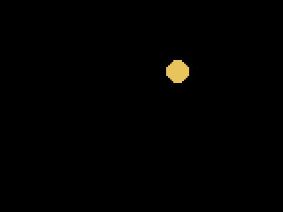
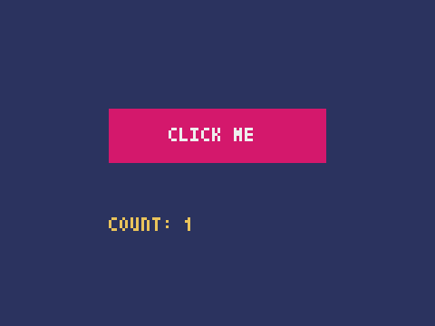
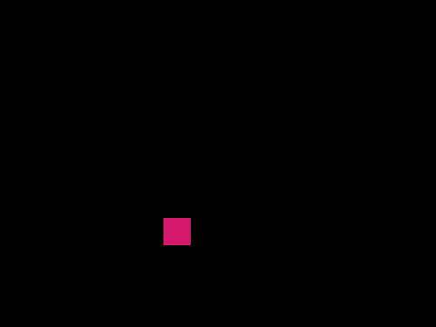
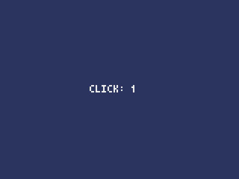
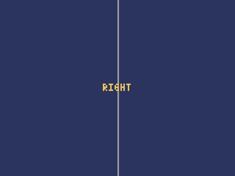

マウス操作をやってみよう
マウスの位置は mouse_x と mouse_y。クリックは、btnp に MOUSE_BUTTON_LEFT を渡して調べます。
マウスの位置と、クリック
| 知りたいこと | 書き方 |
|---|---|
| マウスの横の位置 | pyxel.mouse_x |
| マウスの縦の位置 | pyxel.mouse_y |
| 左クリックした | pyxel.btnp(pyxel.MOUSE_BUTTON_LEFT) |
| マウスの矢印を表示する | pyxel.mouse(True) |
Pyxelの画面では、はじめはマウスの矢印が見えません。pyxel.mouse(True) を init の下に書くと見えるようになります（mouse（矢印の表示））。
マウスの場所に、円を描く
import pyxel # pyxel モジュールを使えるようにする
pyxel.init(160, 120, title="マウスで円") # 幅 160、高さ 120 のウィンドウを用意する（タイトルは "マウスで円"）
pyxel.mouse(True) # マウスカーソルを、表示する
def update(): # update関数を作る（ゲームの中身を動かす係。1フレームごとに呼ばれる）
pass # 何もしない
def draw(): # draw関数を作る（画面を描く係。1フレームごとに呼ばれる）
pyxel.cls(0) # 画面全体を、色 0 で塗りつぶす
pyxel.circ(pyxel.mouse_x, pyxel.mouse_y, 6, 10) # 中心 (pyxel.mouse_x, pyxel.mouse_y)、半径 6 の円を、色 10 で塗る
pyxel.run(update, draw) # update と draw を、1秒に30回繰り返し呼び出して、ゲームを動かす

ボタンを作る
四角を「ボタン」にして、クリックされたかを調べます。クリックしたときに、マウスの場所が四角の中にあるかをif文で調べます。
import pyxel # pyxel モジュールを使えるようにする
pyxel.init(160, 120, title="ボタン") # 幅 160、高さ 120 のウィンドウを用意する（タイトルは "ボタン"）
pyxel.mouse(True) # マウスカーソルを、表示する
count = 0 # count に 0 を入れる
def update(): # update関数を作る（ゲームの中身を動かす係。1フレームごとに呼ばれる）
global count # 関数の外の変数 count を、この中で書き換えると宣言する
if pyxel.btnp(pyxel.MOUSE_BUTTON_LEFT): # もし マウスの左ボタンが押された瞬間なら、下の処理を実行する
if 40 <= pyxel.mouse_x <= 120 and 40 <= pyxel.mouse_y <= 60: # もし「40 <= pyxel.mouse_x <= 120 and 40 <= pyxel.mouse_y <= 60」が True なら、下の処理を実行する
count = count + 1 # count に 1 を足して、count に入れ直す
def draw(): # draw関数を作る（画面を描く係。1フレームごとに呼ばれる）
pyxel.cls(1) # 画面全体を、色 1 で塗りつぶす
pyxel.rect(40, 40, 80, 20, 8) # (40, 40) から、幅 80・高さ 20 の四角を、色 8 で塗る
pyxel.text(62, 47, "CLICK ME", 7) # (62, 47) の位置に、"CLICK ME" を色 7 で書く
pyxel.text(40, 80, "COUNT: " + str(count), 10) # (40, 80) の位置に、"COUNT: " + str(count) を色 10 で書く
pyxel.run(update, draw) # update と draw を、1秒に30回繰り返し呼び出して、ゲームを動かす

四角は rect(40, 40, 80, 20, …) なので、横は40から120（40 + 80）、縦は40から60（40 + 20）までです。「x が40〜120 かつ y が40〜60」なら、ボタンの中をクリックしたことになります（論理演算子（and / or / not）の and）。
確認テスト
このページを見直せば、ぜんぶ解けます。まず自分で考えて（プログラムは、自分のVS Codeで動かしてOK）、それから答えを開こう。
作ってみよう
IDLE か VS Code にプログラムを書いて、実行してみよう。できたら「解答例を見る」を開いて、自分のコードと見比べよう。
課題1
マウスの場所に、赤い四角（10 × 10）がついてくるプログラムを作ろう。
解答例を見る
import pyxel # pyxel モジュールを使えるようにする
pyxel.init(160, 120, title="ついてくる") # 幅 160、高さ 120 のウィンドウを用意する（タイトルは "ついてくる"）
pyxel.mouse(True) # マウスカーソルを、表示する
def update(): # update関数を作る（ゲームの中身を動かす係。1フレームごとに呼ばれる）
pass # 何もしない
def draw(): # draw関数を作る（画面を描く係。1フレームごとに呼ばれる）
pyxel.cls(0) # 画面全体を、色 0 で塗りつぶす
pyxel.rect(pyxel.mouse_x, pyxel.mouse_y, 10, 10, 8) # (pyxel.mouse_x, pyxel.mouse_y) から、幅 10・高さ 10 の四角を、色 8 で塗る
pyxel.run(update, draw) # update と draw を、1秒に30回繰り返し呼び出して、ゲームを動かす

自分のコードと、見比べてみよう。ちがっていても、同じ結果になっていればOKです。
課題2
画面をクリックするたびに count が1ずつ増えて、その数が画面に出るプログラムを作ろう。
解答例を見る
import pyxel # pyxel モジュールを使えるようにする
pyxel.init(160, 120, title="クリックカウンター") # 幅 160、高さ 120 のウィンドウを用意する（タイトルは "クリックカウンター"）
pyxel.mouse(True) # マウスカーソルを、表示する
count = 0 # count に 0 を入れる
def update(): # update関数を作る（ゲームの中身を動かす係。1フレームごとに呼ばれる）
global count # 関数の外の変数 count を、この中で書き換えると宣言する
if pyxel.btnp(pyxel.MOUSE_BUTTON_LEFT): # もし マウスの左ボタンが押された瞬間なら、下の処理を実行する
count = count + 1 # count に 1 を足して、count に入れ直す
def draw(): # draw関数を作る（画面を描く係。1フレームごとに呼ばれる）
pyxel.cls(1) # 画面全体を、色 1 で塗りつぶす
pyxel.text(60, 57, "CLICK: " + str(count), 7) # (60, 57) の位置に、"CLICK: " + str(count) を色 7 で書く
pyxel.run(update, draw) # update と draw を、1秒に30回繰り返し呼び出して、ゲームを動かす

自分のコードと、見比べてみよう。ちがっていても、同じ結果になっていればOKです。
課題3
画面の左半分をクリックしたら「LEFT」、右半分をクリックしたら「RIGHT」と表示するプログラムを作ろう（画面の幅は160だよ）。
解答例を見る
import pyxel # pyxel モジュールを使えるようにする
pyxel.init(160, 120, title="左右判定") # 幅 160、高さ 120 のウィンドウを用意する（タイトルは "左右判定"）
pyxel.mouse(True) # マウスカーソルを、表示する
message = "" # message に文字「」を入れる
def update(): # update関数を作る（ゲームの中身を動かす係。1フレームごとに呼ばれる）
global message # 関数の外の変数 message を、この中で書き換えると宣言する
if pyxel.btnp(pyxel.MOUSE_BUTTON_LEFT): # もし マウスの左ボタンが押された瞬間なら、下の処理を実行する
if pyxel.mouse_x < 80: # もし「pyxel.mouse_x < 80」が True なら、下の処理を実行する
message = "LEFT" # message に文字「LEFT」を入れる
else: # どれにも当てはまらなければ、下の処理を実行する
message = "RIGHT" # message に文字「RIGHT」を入れる
def draw(): # draw関数を作る（画面を描く係。1フレームごとに呼ばれる）
pyxel.cls(1) # 画面全体を、色 1 で塗りつぶす
pyxel.line(80, 0, 80, 120, 13) # (80, 0) から (80, 120) まで、色 13 の線を引く
pyxel.text(70, 57, message, 10) # (70, 57) の位置に、message を色 10 で書く
pyxel.run(update, draw) # update と draw を、1秒に30回繰り返し呼び出して、ゲームを動かす

自分のコードと、見比べてみよう。ちがっていても、同じ結果になっていればOKです。